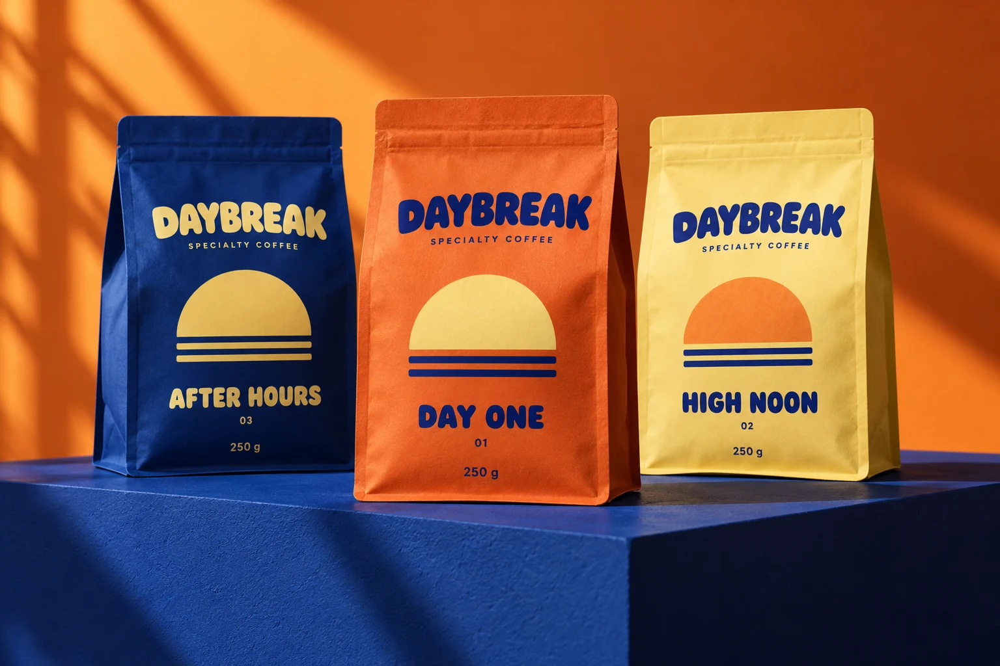
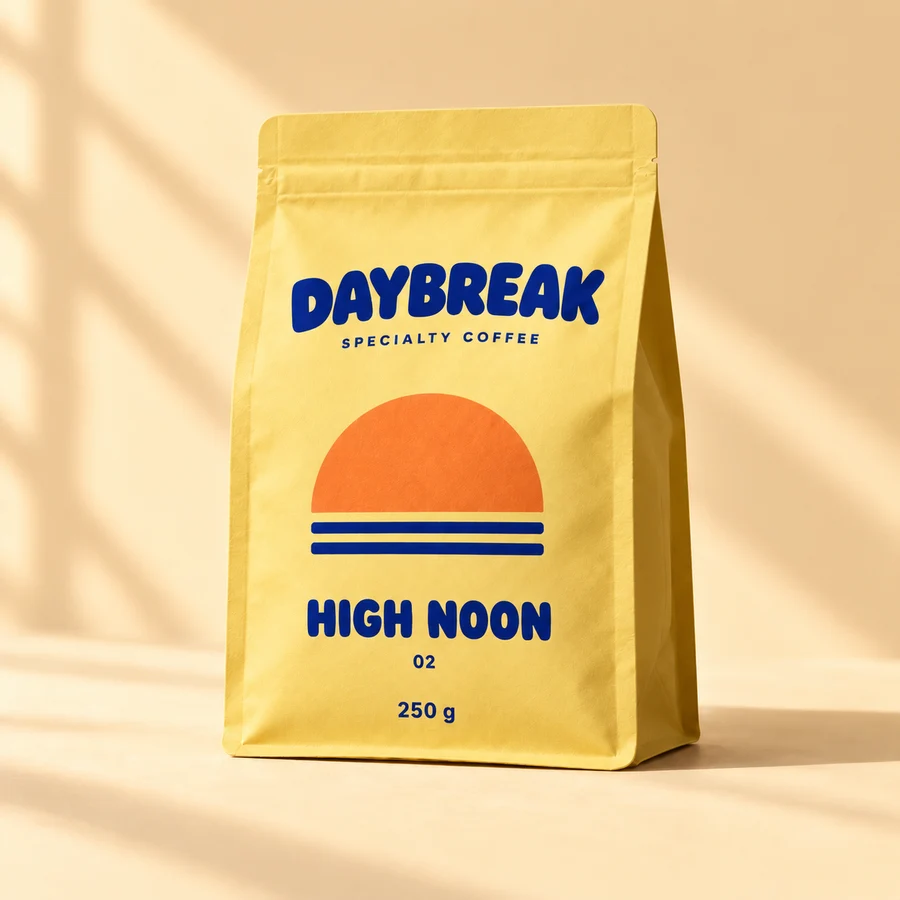
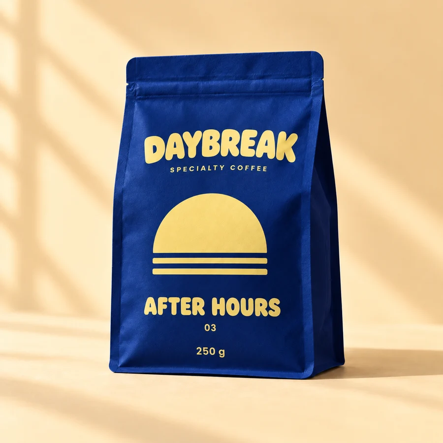

01 / BALANCED
01 / BALANCEDDay One
$16.00 / 250 g
Your everyday, elevated.
- Roast
- Medium
- Tastes like
- Milk chocolate · orange · caramel
SPECIALTY COFFEE / EVERYDAY JOY
A little brighter. A little slower.
A cup that feels like your kind of day.
Three roast personalities. One good ritual.

01 / PICK YOUR PERSONALITY
Bright, balanced or beautifully bold.
Choose a roast, then make it yours.
Fictional roast and tasting descriptions. 250 g packs and USD prices are illustrative.
01 / BALANCED$16.00 / 250 g
Your everyday, elevated.

02 / BRIGHT$18.00 / 250 g
A sunny little detour.

03 / BOLD$16.00 / 250 g
A deeper kind of comfort.
02 / YOUR DAILY PAUSE
Some days start with a plan. Others start with a cup. DAYBREAK is a fictional roastery built around the part you can make your own.
Choose whole bean if you use your own grinder. Filter is a medium grind for a drip brewer or pour-over; French press is coarser; espresso is finer. These are illustrative preparation options.
Try 15 g of coffee to 250 ml of water, then adjust to your taste. Your brewer and grind will change the result. This is a general starting ratio, not a tested DAYBREAK recipe.